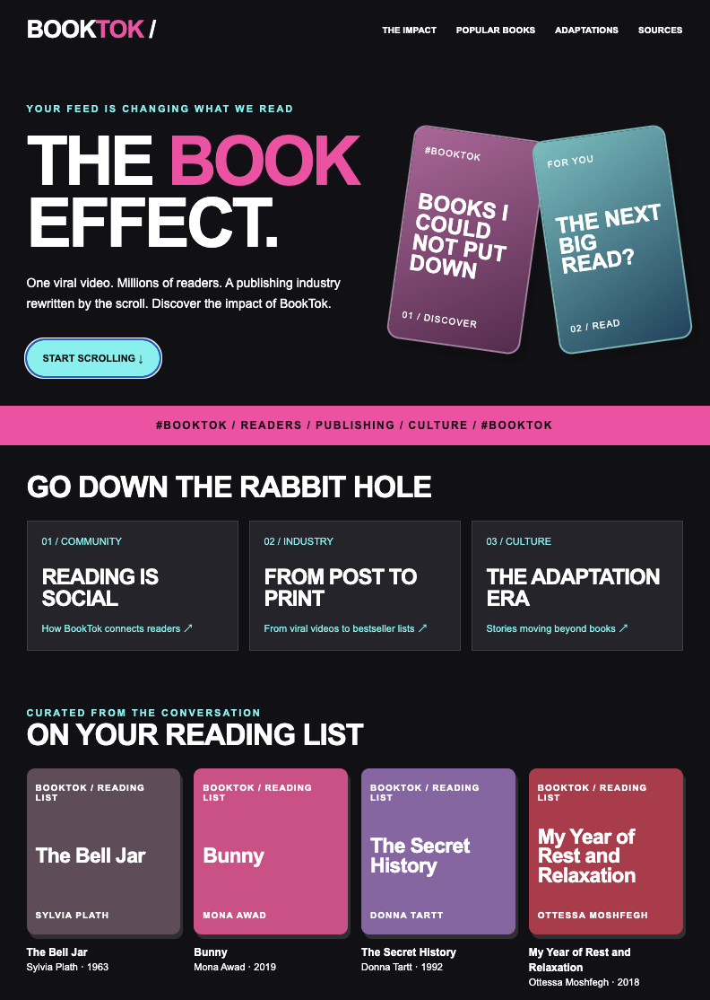
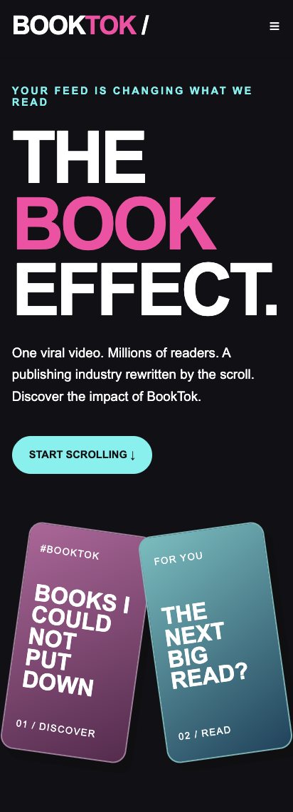
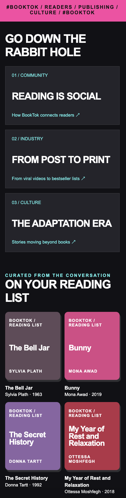

A bold, TikTok-inspired design exploring how social media has transformed reading culture and the publishing industry. This treatment uses a dark background, vibrant pink and cyan accents, oversized typography, and vertical content cards inspired by social media.


